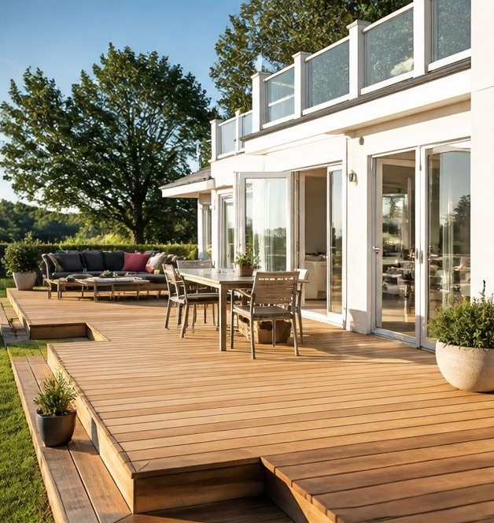

Altaner och trädäck
En altan förlänger sommaren. Vi bygger altaner, trädäck, pergolor och trappor som är anpassade efter din tomt och tål svenskt väder i många år.

Det här ingår
- Planering och enkel ritning utifrån tomt, sol och utsikt
- Grund med plintar eller betongfundament
- Trall i tryckimpregnerat trä, sibirisk lärk eller komposit
- Trappor, räcken och pergola
- Inbyggda bänkar och förvaring om du vill
Bra att veta
- Tid
- 1-2 veckor för en altan på 20-40 m²
- Pris
- Från ca 1 800 kr per m² inklusive material
- ROT-avdrag
- Ja, på arbetskostnaden
Välja material
Tryckimpregnerat trä är det billigaste alternativet och håller länge om det oljas regelbundet. Sibirisk lärk är ett naturligt tåligt trä som får en vacker grå patina. Komposit kostar mer men behöver nästan inget underhåll.